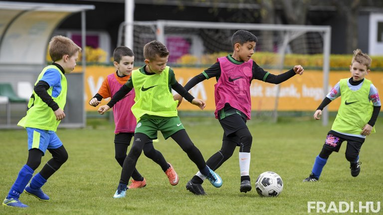
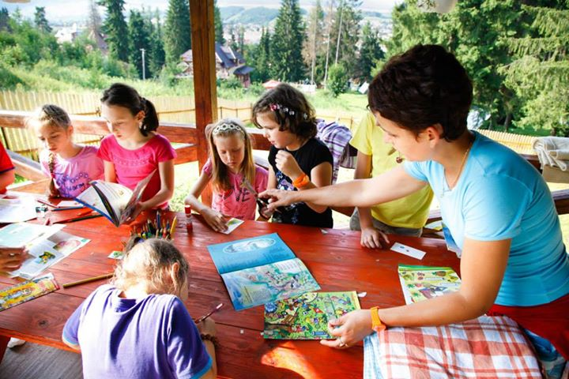
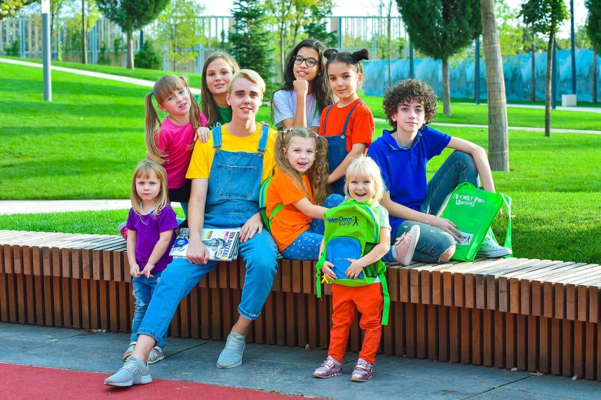
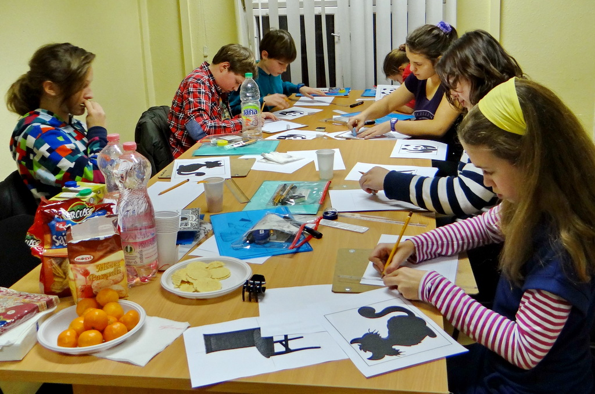

A Zoo Tábor a Fővárosi Állat- és Növénykert tábora, idén már 20. szülinapját ünnepli. A táborozóknak programjaink során lehetőségük van arra, hogy közel kerüljenek az állatokhoz, megismerjék szokásaikat, állatkerti tartásukat. Ez azért is fontos, mert így kialakul bennük egyfajta felelősségtudat, hogy óvják, becsüljék az állatokat és a környezetet, amelyben élnek.
A változatos és játékos programok mellett célunk a környezettudatosságra nevelés, az állatvédelem, a természetvédelem fontosságára való felhívás, illetve a játékos tanulás előtérbe helyezése.
A táborban szakképzett pedagógusok és állatkerti szakemberek segítenek az állatok megismerésében. A tábor résztvevői a hét során megismerhetik többek között az Ausztrálház, a Pálmaház és az Elefántház lakóit, a Dél-Amerika kifutó állatait és több száz más állatot. Az állatos programok mellett kézműves foglalkozás és sok-sok játék színesíti a programot.
A Zoo Tábor napközis tábor.
Hétfőtől péntekig, 5 napos turnusokban nyújt elfoglaltságot a táborozni vágyó 5-14 éves gyermekek számára a nyári szünetben, illetve a tavaszi és az őszi iskolai szünetekben is.
- 2024. 06. 16 - 2024. 06. 23
- 2024. 07. 07 - 2024. 07. 14
- 2024. 07. 16 - 2024. 07. 23
- 2024. 07. 25 - 2024. 08. 02
- 2024. 08. 05 - 2024. 08. 12
- 2024. 08. 16 - 2024. 08. 23
- Focitábor a Velencei Tónál

- Nyári napközis sport- és kézműves tábor

- Angol a Hegyekben - English up in the Hills

- Önbizalom növelő kreatív rajztábor - Miskolc

- Séta az állatok között
- Állatok etetése reggel hajnal 6-kor
- Állatok anatómiáj előadás
- Ebéd 12:00-kor
- Állat simogatás
- Vacsora 18:00-kor
file:///D:/Banki/PD/tabor/tabor%20jelentkezes.html
- Tábor típusa: napközi
- Cím: 1146 Budapest, Állatkerti Krt. 6-12
- Kategóriák: Öko tábor, Állatkerti tábor
- Email: zootabor@zootabor.hu
- Telefonszám: +36306393009
- Napközis ár: 109 900 Ft
- Fizetési mód: Készpénz, SZÉP-kártya, Banki átutalás
- Ajánlott életkor: 5-14